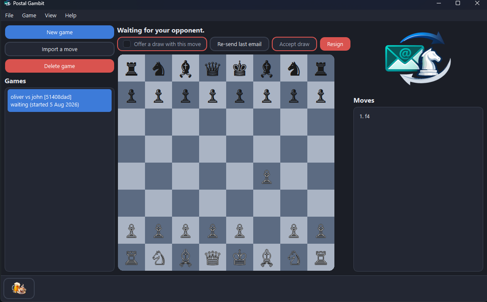

Correspondence chess over your own email
Postal Gambit is a local-first desktop app that keeps your games, enforces the rules and turns each move into a ready-to-send email in whatever mail client you already use. It never touches the network itself: your email is the board between you and your friend.
Slow, thoughtful chess with a real person. One move a day is a fine pace.

The game list, the board and the move history, in the dark theme.
How a game flows
No importer, no matchmaking, no lobby. You and a friend, moving at your own pace, with your own email in between.
Make your move
Click your piece, click its square. The board enforces every rule of chess: legality, check, mate, stalemate and all the draw rules, including the fifty-move rule and threefold repetition.
Send the email
Postal Gambit writes the whole email for you: a short note, an ASCII board diagram and the game record. One button opens it as a draft in your own mail client; another copies it to your clipboard for webmail. You press send.
Import the reply
When the reply lands, click its one-click import link, or paste the email text into the app. Even a bare move like Nf6 from an opponent without the app imports fine. The board updates and it is your move again.
The email is the protocol
Every message a game sends is readable by a human first and a program second. This is roughly what your opponent receives.
Postal Gambit: oliver (White) vs jane (Black) Move 1 (White): e4 Your move. a b c d e f g h 8 r n b q k b n r 8 7 p p p p p p p p 7 ... -----BEGIN POSTAL GAMBIT v1----- Action: move From: oliver@example.org [the complete game record] -----END POSTAL GAMBIT----- Import this move with one click: [Open this move in Postal Gambit]
The block carries the entire game state, so a lost email never corrupts a game. The wire format is versioned and documented in the repo.
What is included
Everything a long-running set of postal games needs, nothing a chess website has.
Full rules enforcement
Legality, check, mate, stalemate and every draw rule. Promotion, castling and en passant all handled. You cannot send an illegal move and neither can your opponent.
One-click import
Every outbound email carries a link that opens the app with the move prefilled, with the same validation as a paste. The move data travels in the link itself and is never uploaded anywhere.
Any number of games
The list shows whose move it is in each game, with full move history and a short game code matching the email subject, so a game and its thread line up at a glance. Multi-select for bulk resign, draw acceptance, delete or re-send, each confirmed before anything destructive happens.
Invitations, draws, resignation
Starting a game, offering a draw, accepting one and resigning all travel over the same email format, so the whole game happens in one thread. Accepting an invitation fills your opponent's reply address automatically from the message.
Dark and light themes
A calm dark theme and a classic light board, toggled from the View menu and remembered between runs.
Keyboard-first
The whole app drives from the keyboard, dialogs included: a visible focus ring, arrow keys everywhere, Enter and Space both activate and the board plays with the cursor keys.
Private by construction
No accounts, no server, no telemetry and no network code at all; the test suite structurally forbids network imports. Games are plain JSON files in your home directory.
No machines
No engine, no analysis, no hints, ever. The product is chess between people; "no machines" is scope, not a missing feature.
Questions a chess player actually asks
Answered plainly. Where the answer is no, we say so.
Does my opponent need the app?
No. Every email is readable text. An opponent without the app can reply with a plain move like Nf6 and it imports fine; they just miss the conveniences.
What email account do I need?
Any account you already use. Postal Gambit never sends anything itself: it opens a pre-filled draft in your own mail client or copies the email to your clipboard, and you press send.
What happens if an email gets lost?
Nothing is corrupted. Every email carries the entire game state, so the next one that arrives catches you up. If the two sides ever disagree, the divergence is detected and reported, never silently resolved.
Can it stop my opponent cheating?
No, and nothing can. Correspondence chess has always been played on trust. What Postal Gambit guarantees is that every move is legal; whether a human chose it is between you and your friend.
Where do my games live?
In plain JSON files under your home directory, one per game, portable and inspectable. Delete the folder and they are gone; copy it and they are backed up.
Is it really offline?
The app contains no network code at all; the test suite structurally forbids network imports. The only thing that touches the internet is your own mail client sending your email.
Built to be trusted
A small app with a strict engineering bar, because a years-long game deserves software that will not lose it.
Tested to the last line
The core logic carries a 100% test-coverage gate. The build fails if a single untested line lands.
Architecture that holds
A clean layered core whose boundaries are enforced by automated structural tests, including the rule that no network code can ever creep in.
A versioned wire format
The email format is specified, versioned and frozen once released, with conformance tests mirroring the spec section by section. Your games outlive any one version of the app.
Open and forkable
GPL-3.0 with the full source on GitHub. If it ever stalls, anyone can read it, fork it or carry it on. Your games are plain files either way.
A quiet promise
Some things Postal Gambit will not do, on purpose.
- No engines. Not optional, not later. Chess between people.
- No server. Your games live on your machine and travel in your email.
- No account. There is nothing to sign up for and nothing to be locked out of.
- No telemetry. The app cannot phone home; it has no network code to do it with.
Find a friend. Play a long game.
Download it, add your name, start a game and send the invitation. The next move might take a day and that is the point.